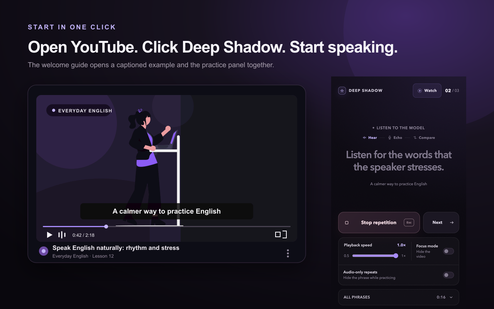
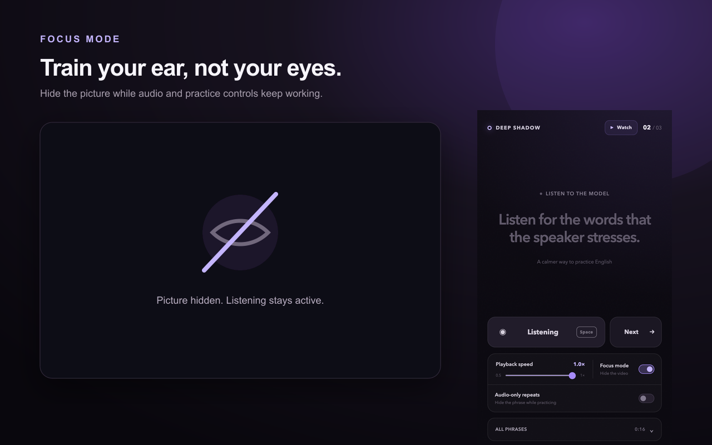

Practice with real voices
Use the captioned English videos you already choose to watch.
English shadowing, without the clutter.
Deep Shadow turns captioned English videos into focused listen → speak → compare drills in Chrome.
Free · Desktop Chrome 114+ · No account

One phrase. One clear loop.
Deep Shadow handles the timing so you can listen with intent and answer while the speaker’s rhythm is still in your ear.
Hear one natural phrase in the original speaker’s voice.
Echo the phrase after the cue. Recording ends on silence.
Hear the original and your take automatically, back to back.
Drill the same phrase again or deliberately move to the next.

Practice by ear
Use the captioned English videos you already choose to watch.
Work from 0.5× to 1×, then finish at the speaker’s natural speed.
Hide the picture without losing audio or the practice controls.
Switch to Watch mode, then return to the phrase at the current time.
Private by design
Your microphone is used only during your speaking turn. The recording stays in memory, plays once for comparison, and is discarded after the repetition or when practice ends.
Questions, answered
Use a YouTube video with English subtitles or closed captions. Human-authored captions usually produce the cleanest phrase breaks; auto-generated captions can work too.
It records your speaking turn so you can immediately compare it with the original phrase. Chrome asks you before access begins.
No. Audio is neither uploaded nor sent to the developer.
No. Each take remains in memory for its comparison and is discarded afterward or when the session ends.
No. Deep Shadow has no sign-in, subscription, tracking, or cloud sync.
Desktop Google Chrome version 114 or later on macOS, Windows, or Linux.
They are recommended. Headphones keep the model phrase out of the microphone and make the A/B comparison clearer.
Reload the video after installation, start playback once, confirm English captions are available, and review Chrome’s microphone site settings. More help is available on the support page.
Deep Shadow 1.0
Available free on the Chrome Web Store.
Get Deep Shadow